| Nombre | Posición | Edad (2025) | Bibliografía | Portada |
|---|---|---|---|---|
| Achraf Hakimi | Lateral / Extremo | 26 |
Jugador del Paris Saint-Germain y de la selección de Marruecos. Conocido por su velocidad, precisión en centros, capacidad ofensiva desde el lateral y contribuciones decisivas en competiciones europeas y africanas. |
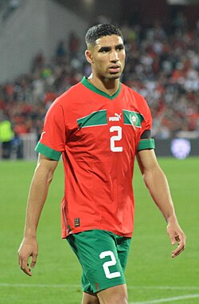 |
| Hakim Ziyech | Mediapunta / Extremo | 32 |
Destacado por su técnica, visión y golpeo de balón. Ha jugado en clubes importantes de Europa, participa regularmente en competencias internacionales con Marruecos, tanto en Copa Africana como en mundiales. |
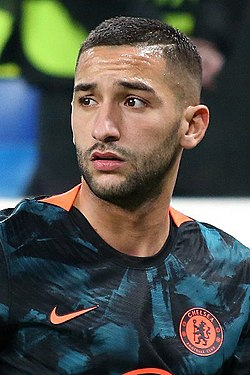 |
| Yassine Bounou (Bono) | Portero | 34 |
Portero titular de la selección y del Al-Hilal. Reputado por sus reflejos, liderazgo bajo los tres palos y actuaciones claves en Copa Africana y Mundial. Ganador de honores con clubs y reconocido en torneos internacionales. |
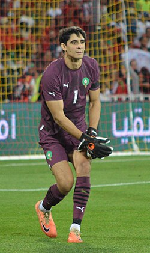 |
| Youssef En-Nesyri | Delantero centro | 28 |
Goleador consistente de Sevilla. Destacado por su potencia aérea, buen posicionamiento y eficacia en el área. Ha sido figura en torneos con Marruecos. |
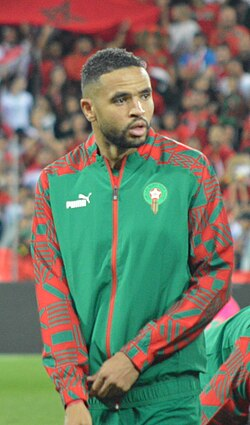 |
| Noureddine Naybet | Defensa central | 55 |
Leyenda de Marruecos. Jugó en Deportivo La Coruña y fue capitán. Uno de los defensas más sólidos y respetados en la historia del fútbol africano. |
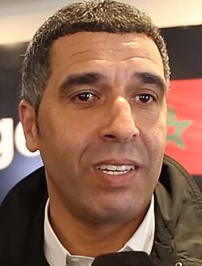 |
| Ahmed Faras | Delantero | 78 |
Ídolo del fútbol marroquí de los años 70. Fue Balón de Oro Africano y goleador histórico. Figura inmortal del deporte en Marruecos. |
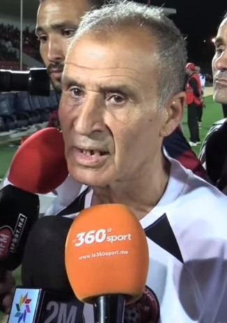 |
| Medhi Benatia | Defensa central | 38 |
Ex jugador profesional, fue pieza clave en clubes europeos como Juventus y Bayern Munich. Capitán de la selección. Retirado ahora ejerce funciones directivas. |
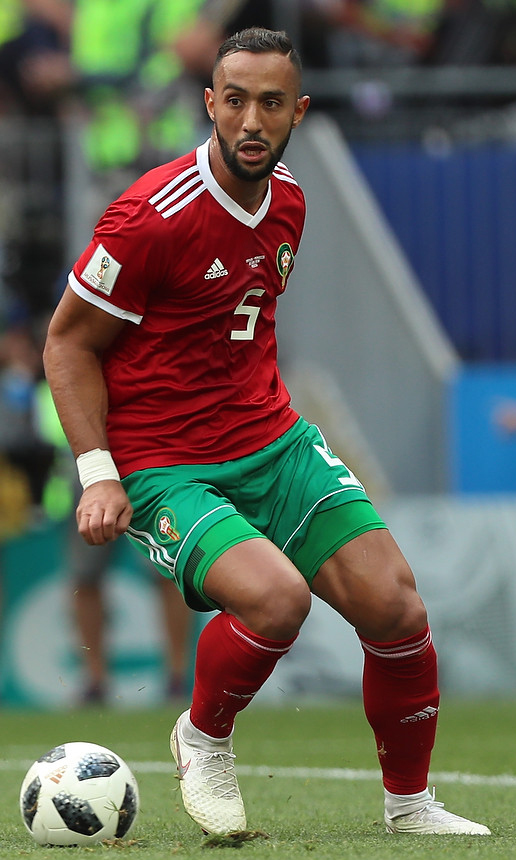 |
| Azzedine Ounahi | Mediocentro | 25 |
Joven promesa, destacó en el Mundial 2022. Buen manejo del balón, visión de juego y desplazamientos ofensivos, cada vez más titular. |
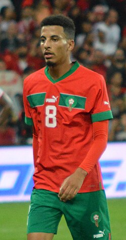 |
| Noussair Mazraoui | Lateral derecho | 27 |
Defensor del Bayern Munich. Ofensivo desde la banda, con buen recorrido y capacidad de apoyo al ataque. También participa en tareas defensivas con solidez. |
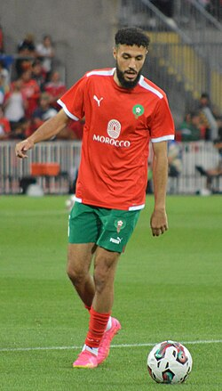 |
| Romain Saïss | Defensa / Mediocentro | 35 |
Jugador experimentado. Capaz de jugar en defensa o mediocentro defensivo. Ha sido capitán, aporta experiencia, liderazgo y solidez. |
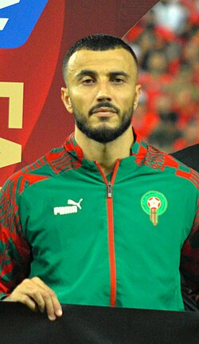 |
| Houssine Kharja | Mediocentro | 43 |
Ex-internacional con gran trayectoria en Italia. Conocido por su llegada al arco, disparo de media distancia y personalidad dentro del campo. |
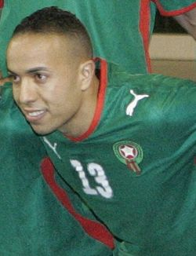 |
| Youssef Safri | Mediocentro defensivo | 47 |
Ex-jugador con experiencia nacional e internacional. Destacado por su disciplina, visión táctica y aporte en el mediocampo. |
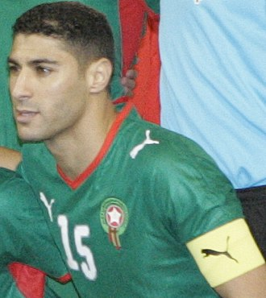 |